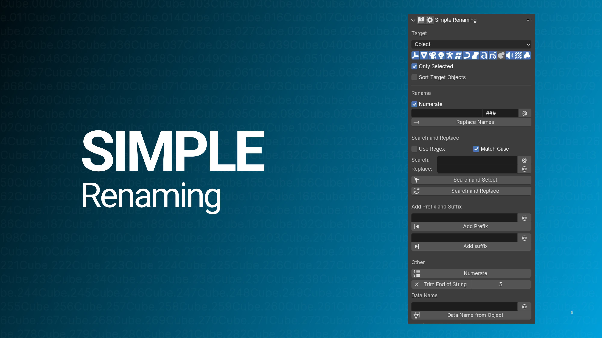
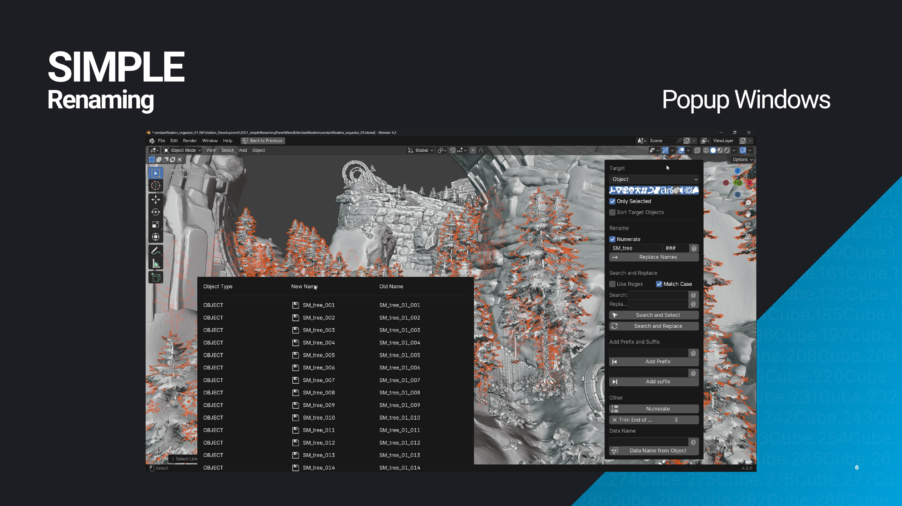
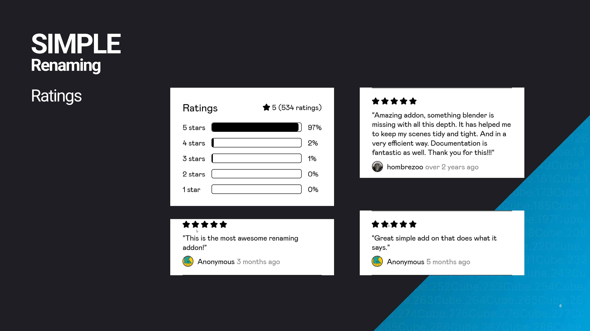

Simple Renaming

What is Simple Renaming?
Simple Renaming helps you batch rename objects and data in Blender quickly. It makes organizing your assets easy and efficient.
Support me on:
Video
Here's a quick look at how Simple Renaming simplifies your renaming tasks in Blender.
Key Features

Renaming Features
- Replace Names and Numbering: Replace names and add sequential numbering easily.
- Add Prefixes/Suffixes: Quickly add prefixes or suffixes for better organization.
- Trim and Number: Trim names and apply numbering to keep things tidy.
- Sync Object Names: Match object names with their data names.
- Search and Replace: Find and rename objects using a powerful search tool.
- Search and Select: Identify and select objects based on name patterns.
Customization
- Rename Anything: Rename objects, materials, collections, and more.
- Focus on Specific Types: Rename only the types you need, like meshes or cameras.
- Selective Renaming: Apply changes to all items or just selected ones.
- Use Regex: Perform complex renaming with Regular Expressions.
- Organize by Order: Rename objects based on selection or position.
User Experience
- Simple UI: Easy to navigate and uncluttered interface.
- Clear Feedback: See exactly what was renamed and how.
- Custom Hotkeys: Access the tool with customizable shortcuts.
Why Simple Renaming?
- Saves Time: Speeds up renaming tasks.
- Easy to Use: No complicated setup, just start renaming.
- Fits Any Project: Works for both small and large-scale tasks.
- Regular Updates: Improved continuously based on feedback.
- Trusted Tool: Highly rated by users on Gumroad.
